GMT BATMAN
El Rolex GMT-Master II, conocido popularmente como “Batman”, es uno de los relojes más icónicos y deseados de la marca suiza Rolex.
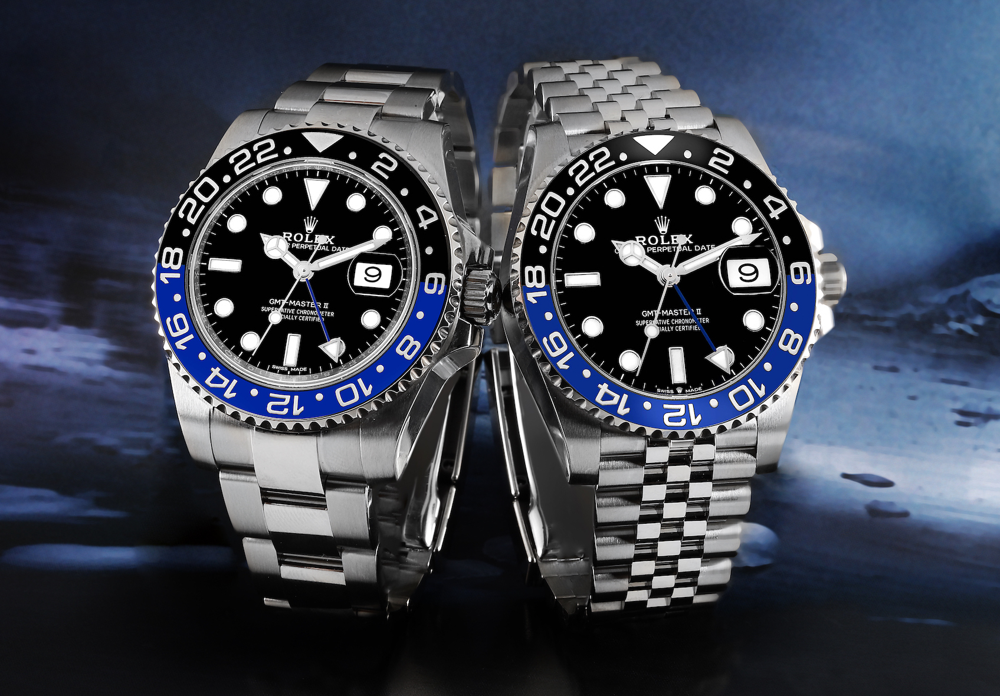
Info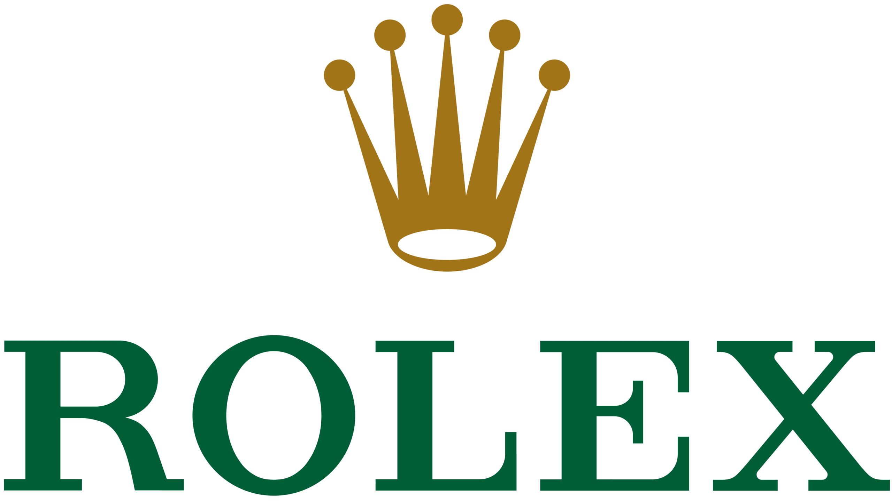
El Rolex GMT-Master II, conocido popularmente como “Batman”, es uno de los relojes más icónicos y deseados de la marca suiza Rolex.

InfoEl Rolex Submariner es uno de los relojes más icónicos de la historia de la relojería, diseñado para el buceo profesional.
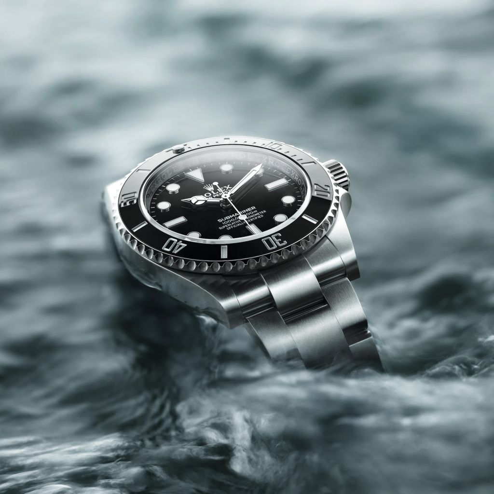
InfoRolex combina historia, técnica y artesanía para crear relojes de precisión excepcional.
Rolex mantiene una relación histórica con el mundo del deporte basada en la precisión y la excelencia.
El Rolex GMT-Master II “Pepsi” es uno de los relojes más reconocibles de Rolex.
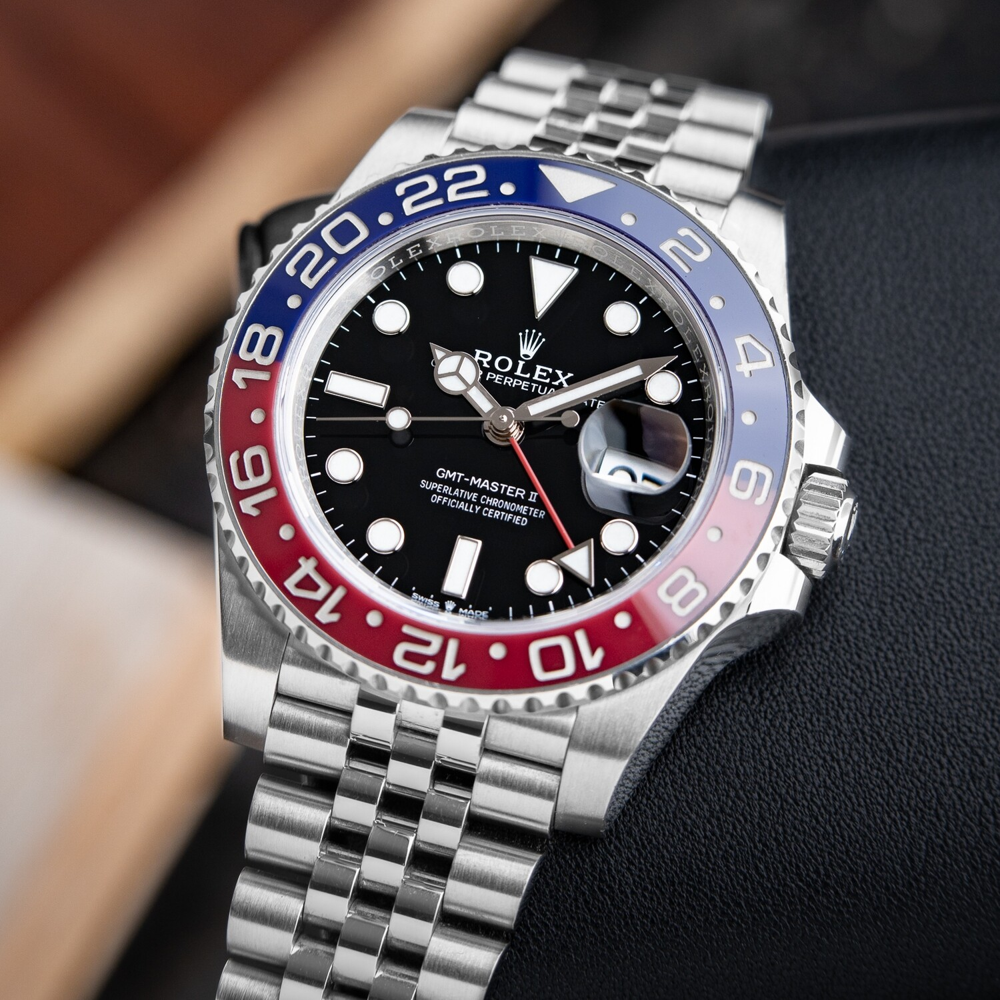
InfoDiseñado para el buceo profesional, símbolo de resistencia y precisión.
InfoUn ícono moderno con bisel azul y negro.
InfoDiseñado para el automovilismo y la alta velocidad.
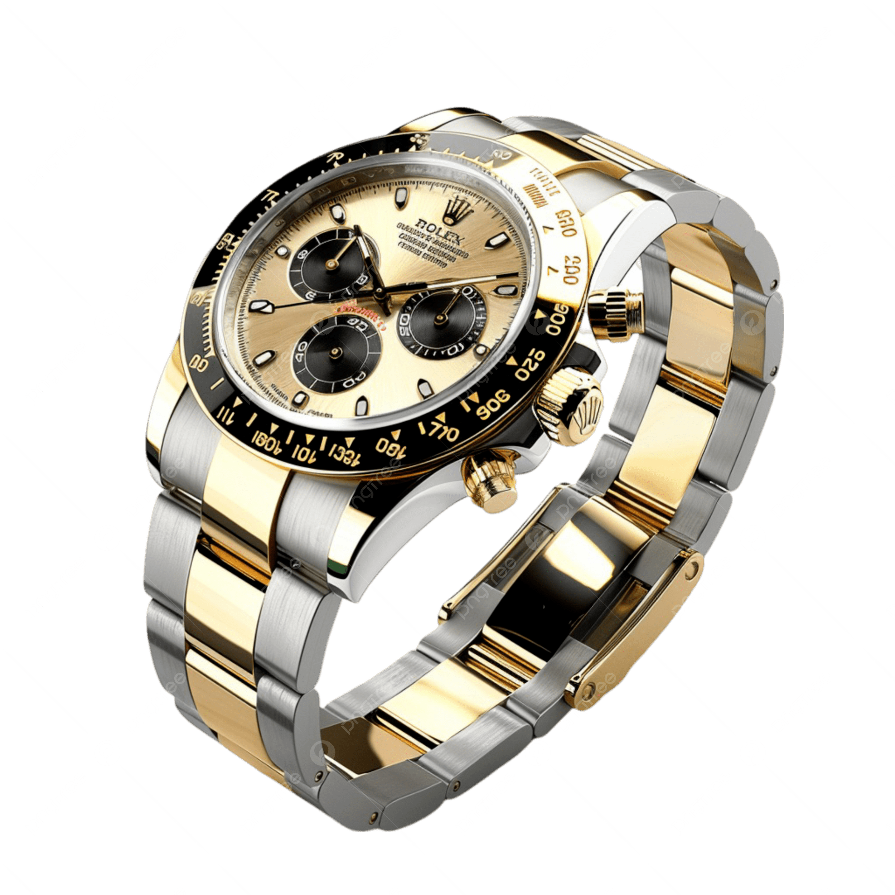
Info
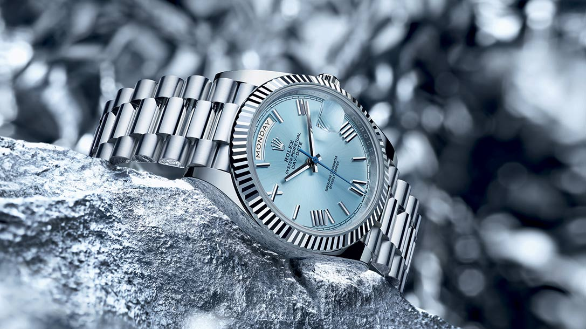
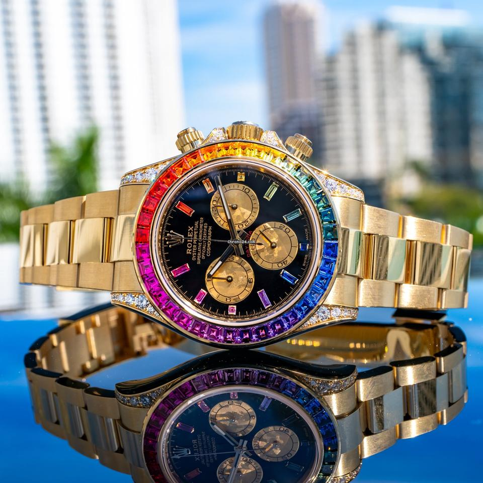
Rolex es una marca suiza de relojes de lujo fundada en 1905, reconocida mundialmente por su alta calidad, precisión y diseño elegante, destacándose por sus innovaciones en la relojería, el uso de materiales exclusivos y la creación de modelos icónicos que combinan funcionalidad, durabilidad y prestigio, convirtiéndose en un símbolo de éxito y excelencia a nivel internacional.
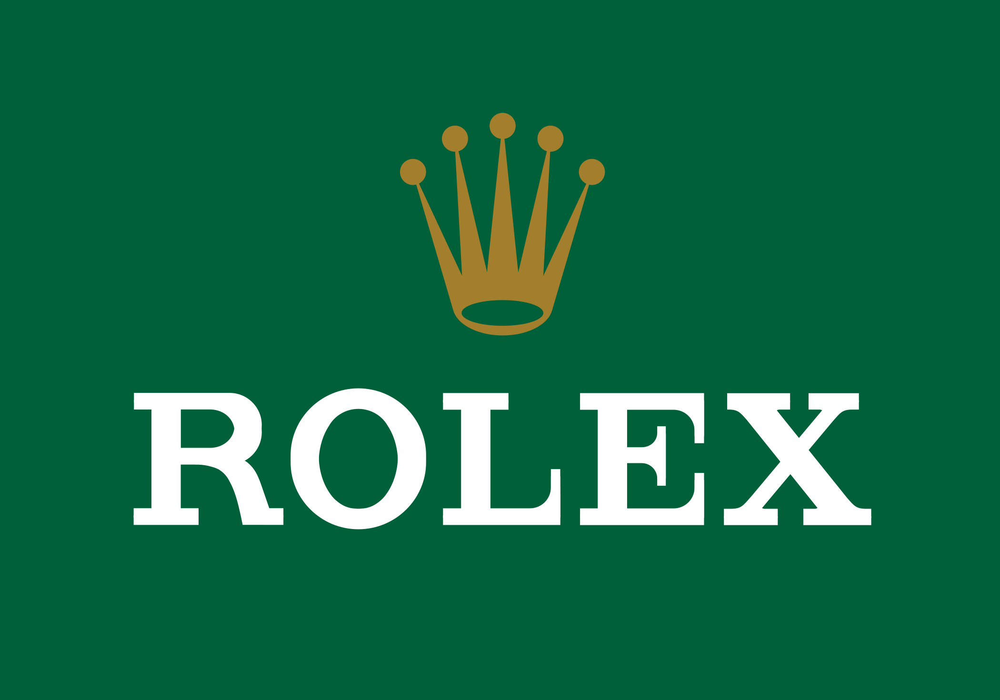
Rolex es una marca suiza fundada en 1905 que combina historia, técnica y artesanía para crear relojes de precisión excepcional. A lo largo de los años, ha revolucionado la relojería con innovaciones como la caja hermética Oyster (1926) y el movimiento automático Perpetual (1931). Cada reloj es un símbolo de excelencia, fabricado con materiales exclusivos como el Oystersteel, el oro Everose y el Cerachrom, y ensamblado a mano con un control de calidad meticuloso. Su mezcla de innovación tecnológica y arte tradicional convierte a Rolex en un referente mundial de lujo, durabilidad y perfección atemporal.
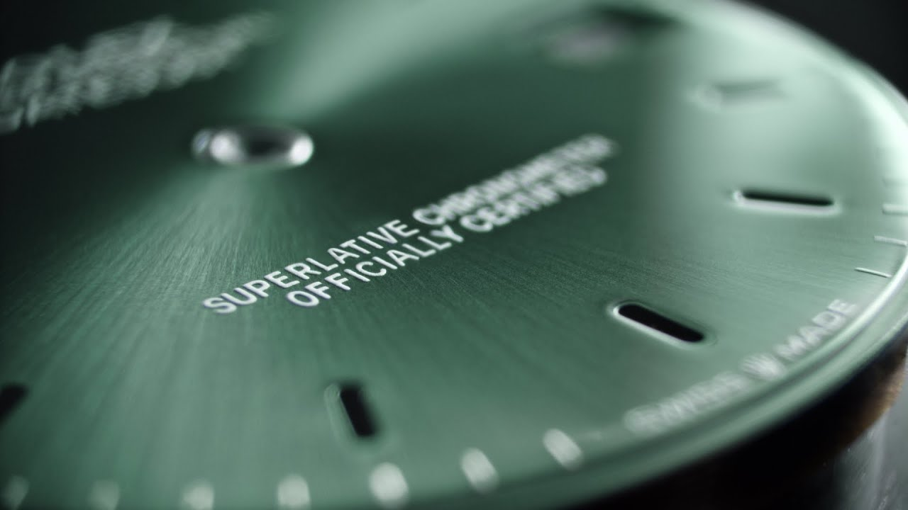
Rolex mantiene una relación histórica y profunda con el mundo del deporte, basada en la precisión, el rendimiento y la excelencia, valores que reflejan la esencia de la marca. Desde hace décadas, Rolex ha sido patrocinador y cronometrador oficial de algunas de las competiciones más prestigiosas del mundo. En el automovilismo, apoya eventos como las 24 Horas de Le Mans y la Fórmula 1. En el tenis, colabora con torneos de gran nivel como Wimbledon, el US Open y el Australian Open, además de ser el reloj oficial de los cuatro Grand Slam. En el golf, respalda campeonatos como el The Open y el Masters de Augusta, y en la vela, participa en la Rolex Sydney Hobart Yacht Race. Esta conexión con el deporte simboliza el compromiso de Rolex con la precisión, la resistencia y el espíritu competitivo, cualidades compartidas tanto por sus relojes como por los grandes atletas del mundo.
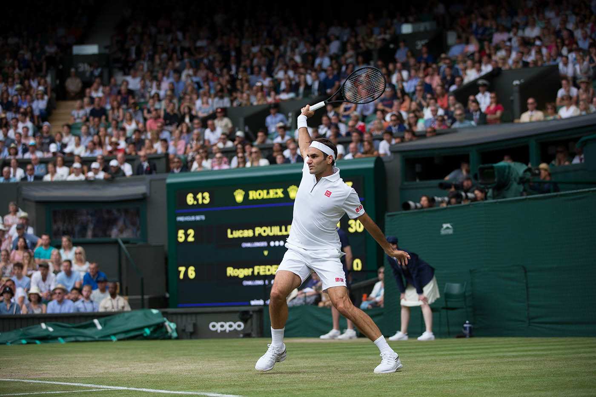
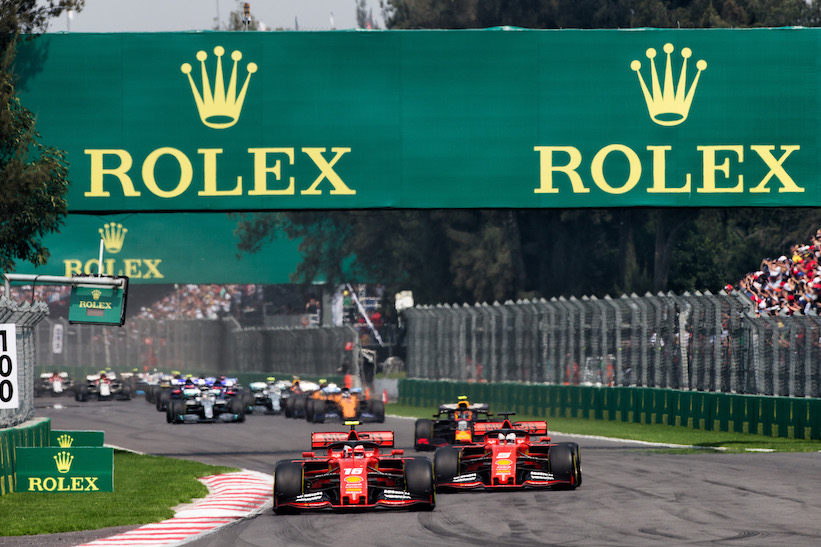